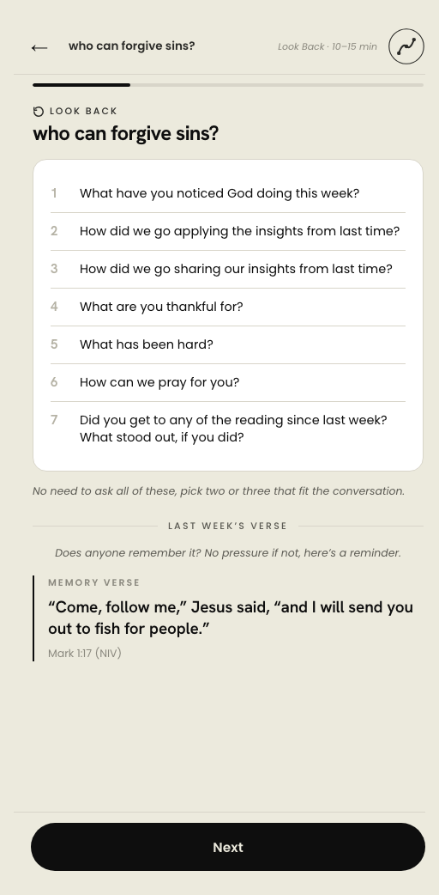

運作方式
回顧、向上看、展望。
每個課程、每次聚會，都遵從完全相同嘅架構。只要喺任何一個課程中體驗過一次，你就已經掌握咗點樣帶領其他所有課程，甚至能夠教導其他人點樣帶領。
01
回顧
花幾分鐘重新聯繫：上次見面之後發生咗咩事、有咩感恩、點樣彼此代禱。

02
向上看
一齊讀一段經文，用自己嘅說話重述一次，然後每次都探討嗰五條相同嘅核心探索問題。

03
展望
將所發現嘅轉化為生活中真實嘅行動：一個要改變嘅行為、一個信靠嘅應許、一個效法嘅榜樣。然後彼此代禱。